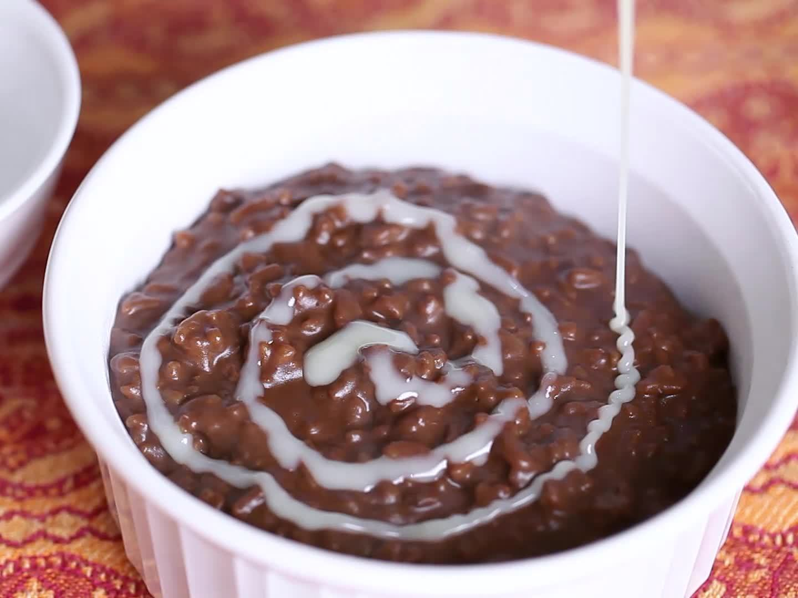

Champorado Recipe

Description
Champorado is a hearty sweet rice (malagkit) with chocolate dish great for snacks.
Ingredients
- 1 cup glutinous sweet rice
- 2 cups light coconut milk
- 1/2 cup cocoa powder
- 1 cup white sugar
- 1 teaspoon salt
- 1 cup thick coconut milk
Steps
- Combine the sweet rice and light coconut milk in a pot; bring to a boil for 10 minutes, while stirring occasionally to keep the rice from sticking to the bottom of the pot.
- Stir the cocoa powder, sugar, and salt into the rice; reduce heat to low, cover, and continue cooking, stirring occasionally, until the rice is tender, about 10 minutes more. Add the thick coconut milk to the mixture and stir to combine. Serve hot.